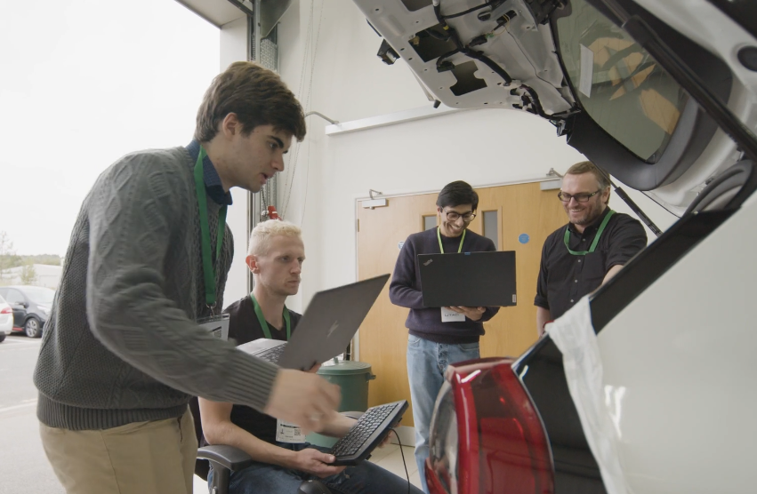
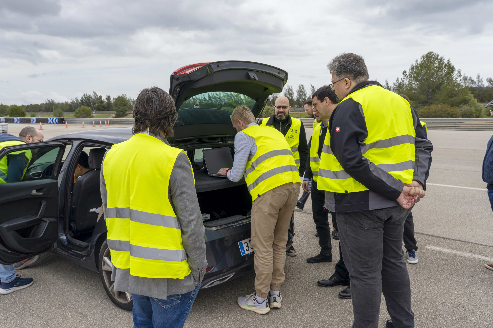

Since graduating from Loughborough University in 2021 I have worked at IDIADA Automotive UK as a software engineer. At IDIADA I have worked on two main types of projects: Industry research and development projects that are more creative and skill based, and customer focussed work that is more about problem solving, meeting targets and results orientated.
---
In customer facing work (which is private) I have mainly worked in embedded software development and testing for ECUs. This has involved requirements derivation (from customer functional expectations), code writing, HIL testing, and finally committing the finished work back to the development trunk for the customer. Managing customer expectations, workloads with Jira, and version management with SVN are some of the transferable, soft skills I have picked up with this work, whilst improving my embedded C programming ability and ability to write thorough unit tests.
Being able to develop both core and optional fucntionality, configure low-level driver communication, debug by stepping through the Assembly code, verifying the functionality against safety requirements were key skills that I learned whilst working on this project.
---
In the R&D work I have worked on a few different cybersecurity projects that vary in scope and involvement.
The first is the AutoCHERI project. Here we worked with a software development firm and University researchers to test and validate new ARM cybersecure hardware in automotive use cases. Designing the use case architecture, preparing the scenario software, integrating with the ARM CHERI hardware, and executing the validation tests were the key parts of this 12-month project. I was a key contributor into the integration of the ARM hardware with the vehicle, designing the use cases, and the validation tests that were performed at the Millbrook testing track.
---
The second is the ERATOSTHENES horizon 2020 project. I was involved at IDIADA as an end-user partner for this large scale, 42-month, inter-European project. Similar to the AutoCHERI project we were validating and testing in specific automotive V2X scenarios, but in this case, we were testing trust-based IOT framework architecture. Working with internal cybersecuirty sofware engineers based in Barcelona, and in conjunction with the large project consortium, I helped deliver use case definitions, module integration onto vehicle hardware, and a thorough evaluation of the project software solution.
The project was a success, the European Commission praised it for being such a well structured and impresssive project that achieved all of it's goals.
Personally, I gained experience in working in a large, dispersed project group, managing work schedules, deliverable writing, CI/CD development, containerisation, cybersecurity, advanced driver assistance systems and complex system architectures.
---
The third project is an internal R&D project focussed on Software Defined Vehicle development. For this project I have become even more familiar with GitLab pipeline workflows and developing a SDV platform. I have needed to create a Scenario for the CARLA simulator to verify the developed SDV and sophisticated perception interface.
The Fourth project is another European-scope research project which has begun inlate 2025. It is a continuation of the SYNERGIES project and involves scenario based ADAS validation and caetgorisation.